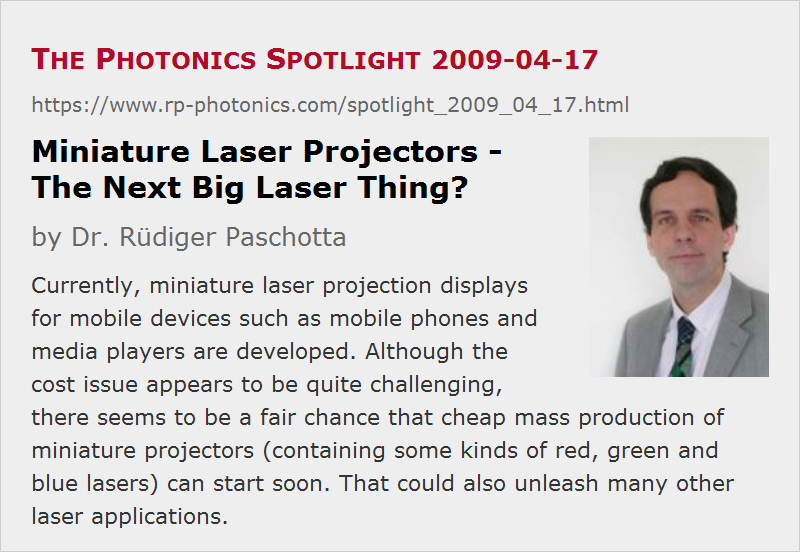

Miniature Laser Projectors – The Next Big Laser Thing?
Posted on 2009-04-17 (revised on 2012-05-10) as a part of the Photonics Spotlight (available as e-mail newsletter!)
Permanent link: https://www.rp-photonics.com/spotlight_2009_04_17.html
Author: Dr. Rüdiger Paschotta, RP Photonics Consulting GmbH
Abstract: Currently, miniature laser projection displays for mobile devices such as mobile phones and media players are developed. Although the cost issue appears to be quite challenging, there seems to be a fair chance that cheap mass production of miniature projectors (containing some kinds of red, green and blue lasers) can start soon. That could also unleash many other laser applications.

Ref.: encyclopedia articles on green lasers, RGB sources
Lasers have found a wide range of applications, but it has often been difficult to predict which ones would really take off and acquire large market volumes. I suppose that most of us wouldn't have predicted music playback to be the first application to bring lasers into nearly all households, but nowadays we see CD players everywhere. A big concern in the early phase was surely the cost of manufacturing such lasers, as there was no laser at that time which had a price tag in the acceptable range for mass applications. Nowadays, lasers for CD players are sold at astonishingly low prices. There is probably no more much money to be made with them, also because the market is quite saturated, and MP3 players with flash memory haven taken over the area of mobile music players.
Could miniature laser projectors be the next big thing? Imagine such a device in a mobile phone or a portable media player. The photographs and videos are already in there, waiting to be projected to a wall, since the screens are definitely too small for viewing, particularly in a group of youngsters or businessmen (being similar in some respects). So we need to project images e.g. to a wall, allowing much bigger images, limited only by the amount of light we get out of a small projector. Surely, many would be excited about the possibility to project their photos and videos with a large size, good resolution and nicely saturated colors.
Lasers or LEDs?
The use of lasers for such projectors is not the only technical option, of course; one may also go for light-emitting diodes (LEDs), which are now available in red, green and blue color, are reasonably efficient. LEDs, however, produce strongly divergent light, making it difficult to obtain a good collection efficiency and a nice image. At least, one requires some kind of multi-channel light modulator (e.g. a digital mirror MEMS device) and cute projection optics. A caveat is that the device will have to be focused according to the projection distance, and the image may not look good when projected from the side.
Lasers are quite different in some respects. Obtaining a well-behaved laser beam, one can resort to simple raster scanning with a moving mirror, combined with direct modulation of the laser (provided that it is fast enough). The optics can then be simpler and more compact than for LED-based devices, while the image resolution is probably higher and sharp images are obtained in a wide range of projection distances. On the other hand, the phenomenon called laser speckle reduces the image quality to some extent – a problem which is essentially absent for LED projectors. The reason is that the emission bandwidth of LEDs is significantly larger, and I am not aware of a practical way to fix this for a laser projector (at least when using ordinary walls as screens).
Concerning laser safety, one might think that there is no substantial difference between laser and LED projectors, as long as the scanning is done sufficiently fast, and the laser beam is switched off if the scanner mirror doesn't work for some reason. However, lasers are actually more critical in this respect – essentially, due to the very small source size. A properly focused eye can receive more light from such a laser projector than from an LED projector. Therefore, the safe power level (and thus the achieved brightness) is substantially more limited for a laser projector, as long as one cannot exclude that somebody looks directly into the projector.
Whatever technology is used, there are some fairly stringent demands: everything has to be very compact and robust. Furthermore, efficiency is crucial: the power budget from the battery in a mobile phone is fairly limited – another factor which appears to favor lasers. Finally, a high price could of course be a killer. This is the most severe challenge for all technologies competing in this area.
Miniature RGB Lasers
Red and blue lasers are no technical or economical challenge any more; there are laser diodes for these colors, efficiently producing e.g. tens of milliwatts in laser beams which can be easily collimated for projection. The difficult part is to make a green laser. Green laser diodes are not yet sufficiently advanced in terms of efficiency and lifetime. There are miniature diode-pumped solid-state lasers with intracavity frequency doubling, but these can not be very quickly modulated and are thus not suitable for raster scanning. (In principle, one may use a continuous-wave laser and an optical modulator, but that would surely be too expensive.) If fast modulation is a must, there is probably no way around semiconductor lasers of some kind.
The approach of Corning for a green laser source is to use an infrared laser diode, which can be cheap and allows for fast modulation, and to do single-pass frequency doubling in a waveguide made of a highly nonlinear material (periodically poled lithium niobate). Such waveguides are expensive in small quantities, but many of them could be made in parallel on large wafers. The output of the infrared laser needs to be focused on the entrance of the waveguide with a high precision, as the effective mode area is rather small. For that purpose, Corning has developed an active beam stabilization based on piezo motors, as also used in cameras. Prototypes appear to work well, and Corning intends to produce large numbers in the near future.
OSRAM Opto Semiconductors takes a different technical route. They use an optically pumped surface-emitting semiconductor laser (VECSELs) instead of a laser diode. This allows them to do intracavity frequency doubling. Due to the enhanced intracavity power, they do not require a waveguide to reach the required efficiency; a small bulk crystal is sufficient. The technology appears to be quite mature already, and OSRAM is expected to ship commercial lasers of that type by the third quarter of 2009.
A still more direct approach could be to use an electrically pumped VECSEL, as developed by Novalux, which has been acquired by Arasor in January 2008. It appears, though, that the focus here is more on laser television, where some aspects are different: the powers are higher, and not directly modulated lasers may be used. Anyway, their technology is also an option for the future.
Integration into Projector Units
Various types of miniature green lasers have been integrated into micro-projector units by the leading company Microvision, also holding a lot of patents in that area. This company is expected to deliver commercial pico-projector (PicoP) units to mobile phone manufacturers in the near future (certainly this year!), and they are also developing vehicle displays and wearable displays as other applications of the projector technology. The only thing missing at this point appears to be the commercially available green miniature laser; there have been delays in the process of setting up mass fabrication of the lasers. Investors got quite nervous, but things may now start moving pretty fast.
The Cost Issue
It will be exciting to see the first mobile phone prototypes with built-in projectors, and the now emerging technological capability to produce many of them. (Prototypes of separate handheld projectors have already been demonstrated by Microvision a while ago.) Thereafter, the crucial question will be the cost: can the cost of such lasers (and other projector components) come down so far that real mass products can be made with that? In a way, it is hard to imagine, given the tight budget for consumer devices. However, we shouldn't forget what happened with CD players. Sure, CD lasers are much simpler, but today's technology is obviously much more advanced. Although not being an expert in mass production, I find it conceivable that economic mass production can be reached in the near future.
Obviously, this would have a further impact on a substantial number of other applications; the currently high price is surely impeding many new applications, and once a breakthrough is achieved here, many things will take off quite fast. Microprojectors alone may become a multi-billion dollar market within a couple of years, and I would expect the total market potential for devices containing small green lasers to be much larger. Once a single application – be it projectors or whatever else – demands large quantities, the price will come down and enable a lot of other applications. Surely, photonics as a whole – also including areas like lighting and photovoltaics – is one of the technologies having a bright future.
This article is a posting of the Photonics Spotlight, authored by Dr. Rüdiger Paschotta. You may link to this page and cite it, because its location is permanent. See also the RP Photonics Encyclopedia.
Note that you can also receive the articles in the form of a newsletter or with an RSS feed.
Questions and Comments from Users
Here you can submit questions and comments. As far as they get accepted by the author, they will appear above this paragraph together with the author’s answer. The author will decide on acceptance based on certain criteria. Essentially, the issue must be of sufficiently broad interest.
Please do not enter personal data here; we would otherwise delete it soon. (See also our privacy declaration.) If you wish to receive personal feedback or consultancy from the author, please contact him e.g. via e-mail.
By submitting the information, you give your consent to the potential publication of your inputs on our website according to our rules. (If you later retract your consent, we will delete those inputs.) As your inputs are first reviewed by the author, they may be published with some delay.
|  |
If you like this page, please share the link with your friends and colleagues, e.g. via social media:
These sharing buttons are implemented in a privacy-friendly way!